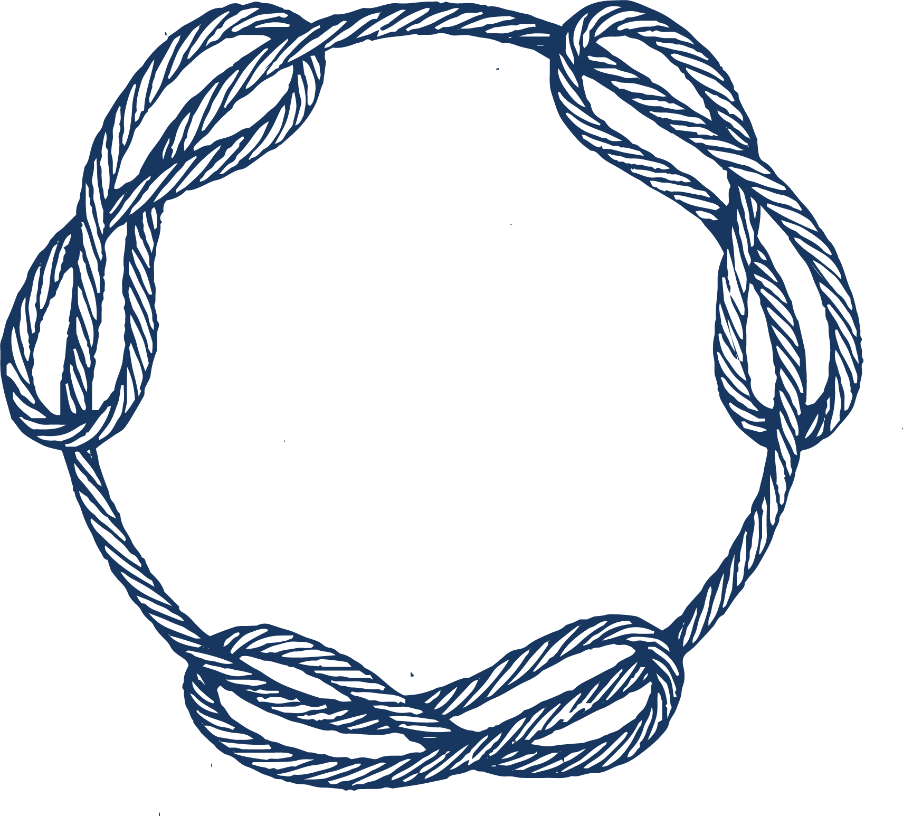
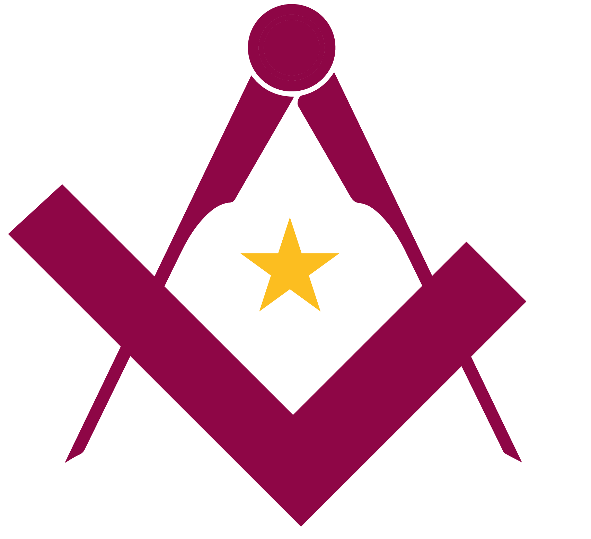

La Masonería o Francmasonería surge en los últimos años del siglo XVII y primeros del XVIII, inspirada en los antiguos gremios medievales de constructores, canteros o albañiles. Es una institución esencialmente filantrópica, filosófica y progresista; tiene por objeto la búsqueda de la verdad, el estudio de la ética y la práctica de la solidaridad; y trabaja por el mejoramiento material y moral de la humanidad.
La Respetable Logia Lucero del Alba es una agrupación de carácter filosófico que practica la Masonería Mixta, Liberal y Adogmática en el Estado de Colima, utilizando el método de trabajo del Rito Escocés Antiguo y Aceptado para los grados simbólicos.
Este taller masónico se encuentra jurisdiccionado al Grande Oriente de México, el cual a su vez forma parte del Centro de Enlace e Información de las Potencias Masónicas Signatarias del Llamamiento de Estrasburgo (CLIPSAS).
La Masonería defiende la completa libertad de consciencia siendo este, particularmente, uno de los distintivos de la masonería liberal y adogmática. Podríamos pensar que este es un concepto nuevo; sin embargo, obediencias masónicas de conocida antigüedad han sido las pioneras en éste tema.
Además del sustento histórico, la forma en que una hermana o un hermano masón concibe determinada cosmogonía corresponde a su propia identidad y pensamiento íntimo, por lo que discriminarlo o rechazarle por ello contradice los principios de una masonería secular, progresista, fraternal e igualitaria.
"[...] En este punto, entendemos que debemos luchar para defender el secularismo como expresión total de la Libertad en oposición a los dogmas y fundamentalismos, no sólo religiosos, sino también políticos, económicos o relacionados con la xenofobia, así como cualquier otro concepto metafísico que deba permanecer dentro del dominio de la libertad individual y no concebido como una obligación
- CLIPSAS (2019), "Nuestra Visión".
secularidad De secular e -idad.
Priorizamos el desarrollo intelectual y la inclusión de las distintas individualidades humanas dentro del estudio de los símbolos masónicos, en un ambiente de hermandad.
Nuestros trabajos se desarrollan siempre desde un punto de vista humanista, laico y respetando los derechos humanos.
La francmasonería reúne a seres humanos de distintos contextos culturales, religiosos, sociales y económicos, sin que ello sea motivo de división o conflicto.
Dentro de nuestra logia acogemos a cualquier persona que tenga la convicción de desarrollarse intelectualmente y en armonía a través del trabajo masónico en un ambiente de plena hermandad y tolerancia, no dando pie a discursos de odio.
Es bien sabido que en el pasado, así como en algunas asociaciones masónicas de corte conservador de la actualidad, se negaba el ingreso a personas del sexo femenino, de la comunidad LGBTIQ+, ateos, agnósticos e incluso a extranjeros. Por ello consideramos aclarar que: las y los hermanos de la R.·. L.·. Lucero del Alba se manifiestan enérgicamente en contra de la discriminación de cualquier tipo, ya sea por razones religiosas, étnicas, de orientación sexual, de identidad de género y demás negaciones a la individualidad de cada ser humano. Considerándolo contrario al espíritu masónico, la libertad de consciencia y el progreso de la humanidad.
Lucero del Alba lleva a cabo sus reuniones siguiendo un método de trabajo que data desde el año 1760, y que ha sido minuciosamente revisado por organismos masónicos internacionales a través de la historia para que así pueda continuar con su vigencia y relevancia, siendo sensible al espíritu de igualdad que debe imperar en la sociedad moderna.
Este se denomina Rito Escocés Antiguo y Aceptado, y se ha adoptado como método de estudio de nuestra Logia según la revisión realizada por el Gran Oriente de Francia (GODF) para la Edición 2016 de su Ritual de Referencia.
El ceremonial masónico cobra importancia cuando éste evoluciona en el mismo sentido de las necesidades humanas, y nos hace crecer de manera en que aprendamos a reconocer los derechos de todas las personas en su individualidad, sin importar sus diferencias de raza, religion, sexo, identidad de género u orientación sexual.
La investigación documental formal es parte fundamental del trabajo que se realiza al interior de Lucero del Alba. Por ello, nos ocupamos en cotejar, homologar y analizar la genealogía y la historia del ceremonial de la Orden, para proporcionar a las y los hermanos de nuestra logia material de estudio serio, de calidad y en consonancia con el espíritu de laicidad de la masonería liberal y adogmática.
Debido a su desarrollo histórico y a los conflictos geopolíticos de la época, el R.·.E.·.A.·.A.·. llega a México de la mano de los ceremoniales escritos por el masón cubano Antonio de Castro (De nombre iniciático Vicente Alfonso Viriato de Covadonga) quien había sido instruido en el ceremonial masónico estadounidense Webb-Preston para las logias azules, en contraposición con los ceremoniales franceses para el R.·.E.·.A.·.A.·.
Es por esta razón que el Ritual practicado en la mayoría de las logias mexicanas difiere ampliamente del practicado en el resto del mundo, teniendo influencia de algunos de los elementos de la masonería estadounidense.
Por otro lado, Lucero del Alba, en un esfuerzo por unir lo disperso y trabajar en consonancia con las ideas progresistas de la francmasonería moderna, decide retomar el ceremonial utilizado por la mayoría de las potencias escocistas liberales del mundo y seguir las pautas marcadas por el GODM en el estudio consciente de la vivencia masónica.